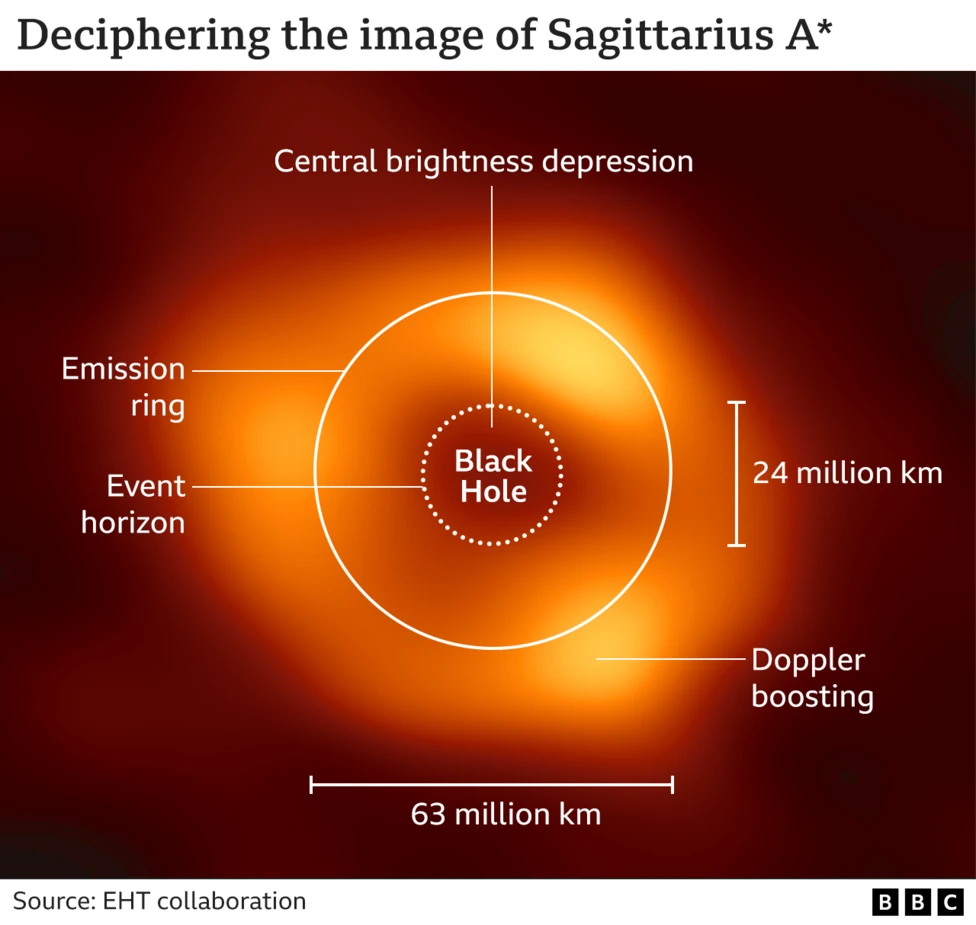

In 1916 albert einstein predicted the existence of black holes, in 1963 The term black hole was used in Life and Science News magazines for the first time, The first black hole to be discovered was in 1971 by Louise Webster, Paul Murdin, and Thomas Bolton. for hundreds of years physicians have speculated and discussed the dark enigma we now call black holes. Through this article I will be exploring the life cycle of black holes. To do this I will discuss the formation of black holes, then analyse the operations of them, Finishing with the fate of black holes. I aim to explain the black holes processes and features throughout the article. So, let us try and understand the mystery of the densest objects in the universe.
The story of a black hole starts with stars, in their core nuclear fusion fuses hydrogen atoms into helium, this leads to a great deal of energy. This energy is the push back against gravity, the gravity balances out with the force of the nuclear fusion if there is still fusion in the core. With large stars much larger than our sun, heavier elements can be fused. these elements get heavier and heavier until they reach the iron core. But the fusion process for iron creates no energy, as more elements are fused into iron there is less radiation energy, this leads to the balance of the two forces being broken, gravity overpowers the weakening radiation energy leading to the collapse of the iron core. This leads to an implosion of the star called a super nova. Depending on the size of the star, this can create a neutron star, or a black hole if the star is large enough and this marks the formation of a black hole. (kurzgesagt (2015).)
As spoken about in the previous paragraph, the gravitational collapse of stars is what forms black holes, all that mass in concentrated at the centre of the black hole, this is what physicians call a singularity. In a paper from 1965 Roger Penrose proposed the cosmic censorship conjecture, in this paper he states that all singularities formed by the collapse of stars are hidden from view inside of black holes, also that light cannot escape from a black hole. No one has been able to disprove this theory, so it is believed to this day. The name black hole came from john wheeler, and it replaced the earlier name ‘frozen star.’ (Stephen Hawking (2018)).
figure 1  A black hole has an outer boundary called an event horizon. Whatever passes that line cannot come back, this is where gravity is so strong it can even pull light and stop it from leaving, due to nothing else being faster than light, all matter gets dragged by the gravitational pull, in the black holes near surroundings. If you were to fall towards a black hole your feet would be pulled more than your head, this would lead to spaghettification, its given that name because your body would be stretched and torn apart into a ‘spaghetti,’ like shape. The fascinating part is if someone watched you approach the black hole, they would never see you cross the event horizon, you would appear to slowdown and stay still, frozen in time; this is all due to light being trapped in the blackhole gravitational pull. (Jorge Pinochet (2022)) Black holes expand due to accretion of substance in its near bye proximate, which is pulled in by the black hole. Over a huge amount of time these black holes consume this matter, explaining the size of them, for example Sagittarius A*, shown in figure 1, is found at the centre of our universe and is approximately four million times the mass of our sun. (NASA (2013.) Figure one shows a real image of Sagittarius A* taken by an international team called the Event Horizon Telescope (EHT) collaboration. the orange ring has a diameter of around sixty-three million kilometres. (Black hole: First picture of Milky Way monster. (2022).)
Black holes may be the enigmas of our universe, but they still do have an end, hawking believed that black holes could radiate off energy and slowly get smaller. This is due to the quantum theory of particles. In essence, they believe particles can come into and out of existence at any time, in this process a anti-particle will also form, this leads to them destroying each other, but due to the gravitational pull of the black hole this process may not happen, this is due to one of these particles being pulled in by the black hole while the other escapes, this escaping particle is believed to cause the end of black holes, this is of course a incredibly slow process but it does show an end to these cosmic voids. (Nola Taylor Tillman and Djordjevic, D. (2019).)
Through my writings and research, I have truly discovered black holes are more complex than I had ever thought. Through the way all the mass of a star can be concentrated and compressed into such a dense, tiny point is truly fascinating and how their gravitational pull destroys all matter but also the fundamentals of time and physics itself. The fact they will keep burning until the undeniable heat death of the universe is an undeniably amazing fact, some physicians believe the universe may have even started from a black hole or we may even be living in a black hole which is an unbelievable thing to speculate. (Sciencefocus.com. (2024).) From there not so humble beginnings to their slow fade outs black holes are truly the most fascinating phenomenon in the universe.